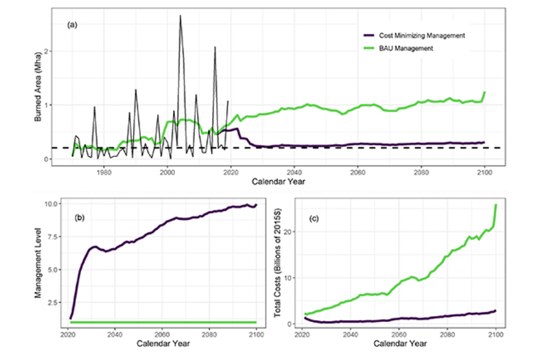

Our Vulnerable Alaska
[Our plan is to use Leaflet to create an overlay of the fire data.]
Future Projections
About Section
We compiled NASA’s ABoVE data to contrast the effects of monetary resources put into managing Alaska’s wildfires. The results are clear: the money invested into wildfire interventions outweigh the money lost in fire damage.
Our prototype presentation utilises data from the Arctic-Boreal Vulnerability Experiment (ABoVE) and the open access research paper
The costs and benefits of fire management for carbon mitigation in Alaska through 2100 by Molly Elder et al 2022 Environ. Res. Lett. 17 105001.